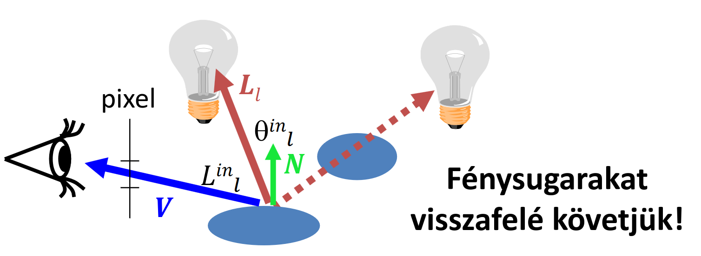
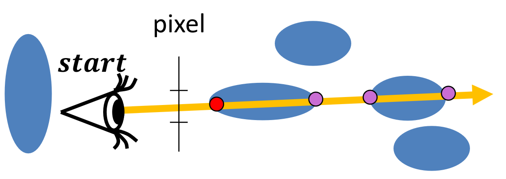
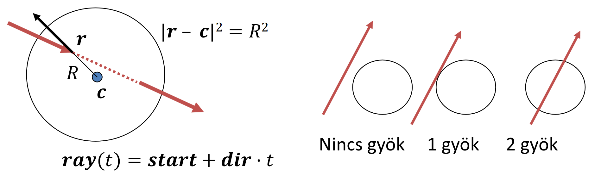
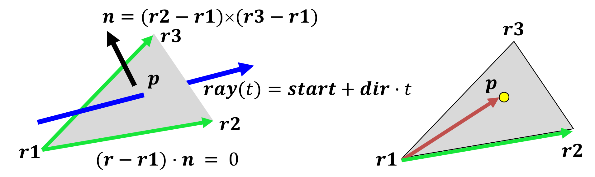
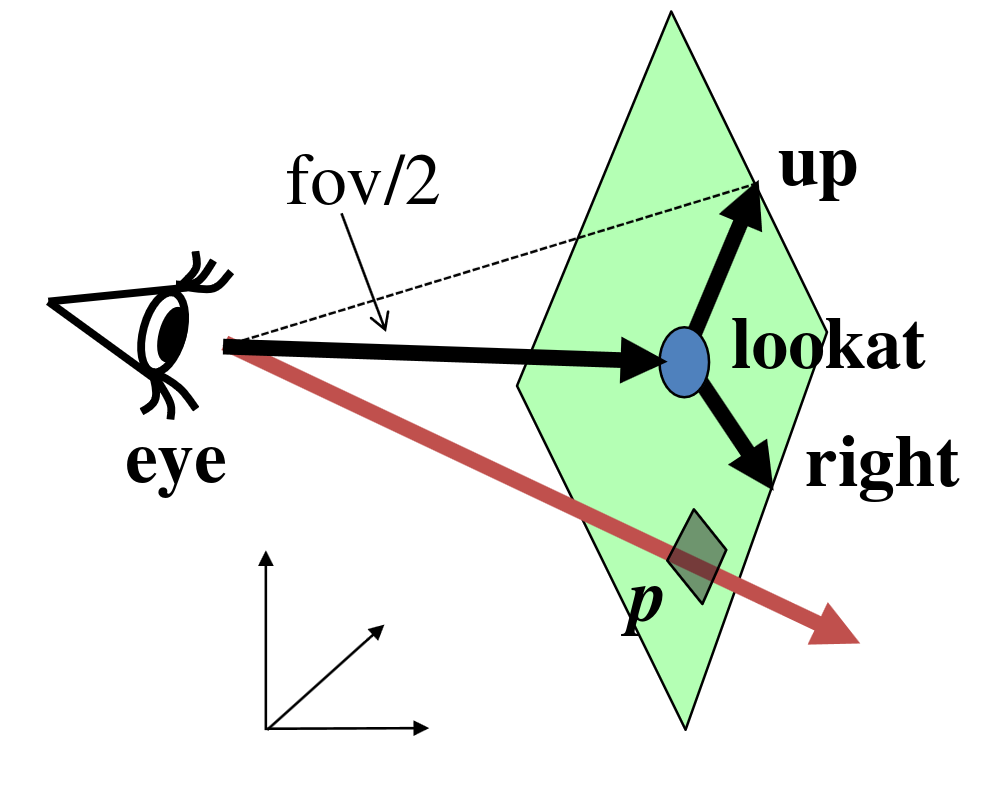
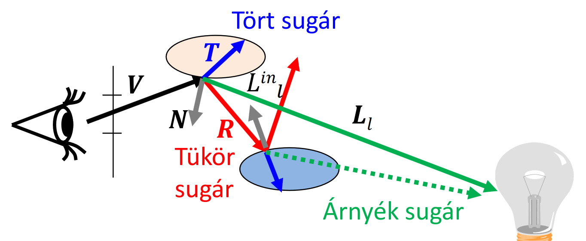

Sugárkövetés
A dolog lényege, hogy egy 3D világ illúziójának képét szeretnénk a képernyőnkök látni, ezért kiszámoljuk, hogy bizonyos pixelekre a fény milyen úton jut el.
Lokális illumináció
Csak absztrakt fényforrásokatat veszünk figyelembe, azokat is csak ha direkt módon világítják meg a testeket.

\(L(V) \approx \sum_l {L^\text{in}}_l \cdot f_r(L_l, N, V) \cdot \cos^+ {\theta^\text{in}}_l \\ \qquad~~ = \sum_l {L^\text{in}}_l \cdot \{ k_d \cdot (L_l \cdot N)^+ + k_s \cdot \big((H_l \cdot N)^+\big)^\text{shine} \}\)
Ambiens tag
Lokális illuminációnál azok a helyek, amiket semmilyen fény nem világít meg direktben, teljesen feketék lesznek. A való életben ez nem így van (golbális illumináció). Ennek egy olcsó megoldása, hogy mindent kivilágosítunk egy kicsit. Ez az ambiens fény.
Az ambiens tagot minden visszakövetett sugárhoz hozzáadjuk (csak egyszer!).
\(L(V) \approx \sum_l {L^\text{in}}_l \cdot f_r(L_l, N, V) \cdot \cos^+ {\theta^\text{in}}_l + \boxed{k_a \cdot L_a}\)
Láthatóság
Adott pixelből elindítjuk a sugarat, meg kell keresnünk a legközelebbi objektumot, amibe a sugarunk beleütközik.

Hit firstIntersect(Ray ray) {
Hit bestHit;
for(Intersectable * obj : objects) {
Hit hit = obj->intersect(ray); // hit.t < 0 ha nincs metszés
if(hit.t > 0 && (bestHit.t < 0 || hit.t < bestHit.t))
bestHit = hit;
}
if (dot(ray.dir, bestHit.normal) > 0)
bestHit.normal *= -1; // mindenképpen felénk nézzen a normális
return bestHit;
}
Metszéspontszámítás
Gömb

- Felület pontjai azon \(r\) pontok, ahol \(|r-c|^2 = R^2\)
- Metszéspont: Kiszámoljuk a másodfokú egyenletet, ahol \(t\) az ismeretlen. Ha két gyökünk van, a közelebbit tekintjük. \(|\text{ray}(t) - c|^2 = R^2 \\ \text{Megoldás: . . .}\)
- Normálvektor: \(N = (\text{ray}(t)-c)/R\)
Implicit felületek
- A felület pontjai azon \(r\) pontok, ahol \(f(r) = 0\)
- Sugár: \(\text{ray}(t) = s + d \cdot t\)
- Legyen \(t^*\) azon paraméter, ahol \(\text{ray}(t^*) = r^*\) pontban a sugár metszi a felületet, azaz \(f(r^*) = 0\)
- Tehát a metszéspont: \(r^*\)
- Normálvektor: \(N = \text{grad}f(r^*)\)
Kvadratikus felületek:
- A felület pontjai: \(f(r) = \begin{bmatrix} r & 1 \end{bmatrix} \cdot Q \cdot \begin{bmatrix}r \\ 1\end{bmatrix} = 0\) (Q szimmetrikus)
- Metszésparaméter és metszéspont: \(t^*\) és \(r^*\) hasonlóképpen.
- Normálvektor: \(N = \text{grad}f(r^*) = Q \cdot \begin{bmatrix} r^* \\ 1 \end{bmatrix}\) első három koordinátája
Háromszögek, poligonok

-
Pontjai:
Először megkeressük, hogy a háromszög síkját hol metszi, majd ellenőrizzük, hogy az adott pont benne van-e a háromszögben.
-
Síkmetszés:
\((\text{ray}(t) - r1) \cdot n = 0 \qquad (t>0)\)
\(\(\boxed{t = \cfrac{(r1 - \text{start}) \cdot n}{\text{dir} \cdot n}}\)\) asd 2. Belül van-e:
\(((r2 r1) \times (\bold{p} r1)) \cdot n > 0\)
\(((r3 r2) \times (\bold{p} r2)) \cdot n > 0\)
\(((r1 r3) \times (\bold{p} r3)) \cdot n > 0\)
-
-
Normálvektor: \(n\) (vagy shaderrel állítjuk)
Render
for p in pixels:
ray = getray(eye, pixel)
color = trace(ray)
write_pixel(p, color)
getray

p = lookat + a * right + b * up // a, b in [-1, 1] (normalizált eszköz koordináták)
// ray:
start = eye
dir = p - eye
Rekurzív sugárkövetés

Eddig csak a direkt megvilágítást vizsgáltuk, most belevesszük a tükröződést, fénytörést is.
\(L(V) = \begin{cases} k_a \cdot L_a + \sum_l {L^\text{in}}_l \cdot \{ k_d \cdot (L_l \cdot N)^+ + k_s \cdot \big((H_l \cdot N)^+\big)^\text{shine} \} \\ % yeah \underbrace{F(V \cdot N)}_{\text{Fresnel}} \cdot \underbrace{L^\text{in}(R)}_{\text{Tükör irányból érkező fény}} + \underbrace{\big(1 - F(V \cdot N)\big)}_{\text{1 - Fresnel}} \cdot \underbrace{L^\text{in}(T)}_{\text{Törési irányból érkező fény}} \end{cases}\)
Kvíz
1. Az \(f(r)=[r, 1] \cdot Q \cdot [r, 1]^T=0\) implicit egyenletű kvadratikus felület és a \(ray(t)=s + d \cdot t\) egyenletű sugár metszéspontjához a következő másodfokú egyenletet kell megoldani: \(at^2+bt+c=0\). Mi lesz a \(b\)?
Megoldás: Széttrancsírozzuk...
$ 0 = f(r) = [r, 1] \cdot Q \cdot [r, 1]^T \newline 0 = [s + d \cdot t, 1] \cdot Q \cdot [s + d \cdot t, 1]^T \newline 0 = ([s, 1] + t[d, 0]) \cdot Q \cdot ([s, 1] + t[d, 0])^T \newline 0 = [s,1]Q[s,1]^T + t([s,1]Q[d,0]^T) + t([d,0]Q[s,1]^T) + t^2([d,0]Q[d,0]^T) $
Ahol
\(b = [s,1]Q[d,0]^T + [d,0]Q[s,1]^T\)
És mivel \(Q\) szimmetrikus (nagyon remélem hogy ezért mert tényleg nem értem hogy másképp jön ki xdd)
\(b = 2[s,1]Q[d,0]^T = 2[d,0]Q[s,1]^T\)
2. Egy kvadratikus felület mátrixa az alábbi: 0, 0, 0, 1 0, 0, 0, 1 0, 0, 0, 1 1, 1, 1, -2 A felületet sugárkövetéssel jelenítjük meg, a szem az origóban van, a sugár irányvektora az (1, 1, 1). Mennyi a kvadratikus felület normálvektorában az x és z komponensek aránya (n.x/n.z) ott, ahol a sugár először metszi a kvadratikus felületet.
Megoldás (habár triviális): A sugár: \(\text{ray}(t) = s + d \cdot t = (0, 0, 0) + (1, 1, 1) \cdot t = (t, t, t)\)
A metszéspont: $ 0 = (t, t, t, 1) \begin{pmatrix} 0 & 0 & 0 & 1 \ 0 & 0 & 0 & 1 \ 0 & 0 & 0 & 1 \ 1 & 1 & 1 & -2 \ \end{pmatrix} (t, t, t, 1)^T \ ...\ 0 = 6t - 2\ t = 1/3\ r^* = (\frac 1 3,\frac 1 3,\frac 1 3) $
Innen a normálvektor csak hab a tortán: \(N = \text{grad}f(r^*) = Q[r^*, 1]^T = (1, 1, 1, -1)\) Tehát az arányuk bosszantóan de kereken \(1\).
3. A sugár kezdőpontja (0, 0, 0), irányvektora (2,0,0). Hol metszi ez a sugár a (8,0,0) középpontú, 8 sugarú gömböt, pozitív sugárparaméterrel? Válaszként a metszéspont x koordinátáját várjuk.
Megoldás: Elképzeljük leli szemeink előtt hogy a sugarunk a gömböt a \((0, 0, 0)\) és a \((16, 0, 0)\) pontokban metszi. Az első esetben a sugárparaméter \(0\) a feladat viszont pozitívat kér, tehát a válasz \(16\).
4. A sugár irányvektora (9, 0, 0) és egy (1, 1, 1) középpontú gömb (4, 5, 1) pontját találja el. Milyen irányban halad tovább, ha a gömb optikailag sima, törő, és a gömb anyagának relatív törésmutatója 1.0? Válaszként az egység hosszú irányvektor x komponensét várjuk.
Megoldás: \(1\). Mivel a gömb anyagának relatív törésmutatója 1 és a gömb optikailag törő, a törésirány nem változik, tehát a sugár nem hajlik meg. Vagy nem tudom.
5. Egy háromszög három csúcsa (8,3,9), (8,3,1), (8,4,2). Hol metszi a (0,0,0) kezdőpontú (1,0,0) irányvektorú sugár a háromszög síkját? A metszéspont x koordinátáját várjuk válaszként.
Megoldás: Ha bárhol is metszük a háromszöget akkor annak \(x\) koordinátája biztosan 8, a többit nem kérdezi. Ha szeretnéd az idődet pazarolni akkor síkmetszés + megnézed benne vagy-e.
6. A sugár irányvektora (9, 0, 0) és egy (1, 1, 1) középpontú gömb (4, 5, 1) pontját találja el. Milyen irányban halad tovább, ha a gömb optikailag sima, tükröző? Válaszként az egység hosszú irányvektor x komponensét várjuk.
Megoldás:
A gömb sugara:
\(R = |(4, 5, 1) - (1, 1, 1)| = 5\)
A gömb normálvektora:
\(N = (\text{ray}(t)-c)/R = ((4, 5, 1) - (1, 1, 1))/5 = (0.6, 0.8, 0)\)
Már bizonyára a könyökünkön csöpög, hogy
\(n = \cfrac{\sin \theta ^\text{in}}{\sin \theta}\)
És mint a jógyerekek normalizáltuk a sugárirányt:
\(v = (1, 0, 0)\) (vagy \(d\))
Kiszámoljuk a visszavert sugarat:
\(\cos \alpha = -v \cdot N = -0.6\)
\(R = v + 2N \cos \alpha\) (az egyszerűség kedvéért ez egy másik \(R\), nem a sugár)
\(R = (1, 0, 0) + 2(0.6, 0.8, 0) \cdot (-0.6) = (0.28, -0.96)\)
7. Az alábbi osztály egy origó középpontú és axes.x, axes.y, axes.z fél főtengelyhosszú ellipszoidot valósít meg, amelyre a sugár metszéspontszámítást implementáltuk. A vec3-ra az osztást GLSL stílusban, azaz koordinátánként függetlenül valósítottuk meg. Kérjük a hibás sorok sorszámát!
class Ellipsoid : public Intersectable {
vec3 axes;
public:
Hit intersect(const Ray& ray) {
Hit hit;
1) float a = dot(ray.dir/axes, ray.dir/axes);
2) float b = dot(ray.start/axes, ray.dir/axes) * 2;
3) float c = dot(ray.start/axes, ray.start/axes) ;
4) float discr = b * b - 4 * a * c;
5) if (discr < 0) return hit; else discr = sqrtf(discr);
6) float t1 = (-b + discr)/2/a, t2 = (-b - discr)/2/a;
7) if (t1 <= 0) return hit; // t1 >= t2 for sure
8) hit.t = (t2 > 0) ? t2 : t1;
9) hit.position = ray.start + ray.dir * hit.t;
10) hit.normal = (hit.position - center)/radius;
hit.material = material;
return hit;
}
};
8. Egy \(f(r) = r \cdot r - a \cdot r\) implicit egyenletű felületet, ahol \(a = (3, 4, 0)\), az $r = (3, 4, 0) $ pontban talált el egy \((9,7,8)\) kezdőpontú sugár . Mi a felület normálvektorában az \(x\) és \(y\) komponensek aránya a metszéspontban?
Egoldás: Kisujjból tudunk gradienst számolni már:
\(N = \text{grad}f(r) = (2x-3, 2y-4, 2z)\)
Ami a \((3, 4, 0)\) pontban:
\(N = (3, 4, 0)\)
És így nagyon szépen kijön, hogy \(0.75\)